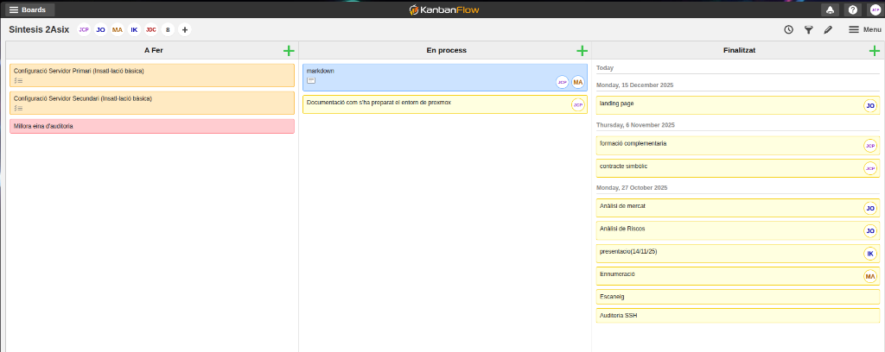

Equip de Treball
Membres de l'equip
| Nom |
Inicials |
Rol principal |
| Jordi Cervera |
JCP |
Desenvolupament eina d'auditoria, Docker, Proxmox, documentació |
| Joan Bertomeu |
JO |
Alta Disponibilitat (HA), anàlisi de mercat, anàlisi de riscos |
| Marc Baiges |
MA |
Documentació, markdown, enumeració SMB |
| Ilyass Khaleq |
IK |
Presentació, suport configuració |
Gestió de tasques — KanbanFlow
Captura del tauler

Distribució de tasques
Finalitzades
| Tasca |
Responsable |
Data |
| Anàlisi de mercat |
Joan Bertomeu (JO) |
27/10/2025 |
| Anàlisi de Riscos |
Joan Bertomeu (JO) |
27/10/2025 |
| Presentació (14/11/25) |
Ilyass Khaleq (IK) |
27/10/2025 |
| Enumeració (SMB) |
Marc Baiges (MA) |
27/10/2025 |
| Escaneig (nmap) |
Jordi Cervera (JCP) |
27/10/2025 |
| Auditoria SSH |
Jordi Cervera (JCP) |
27/10/2025 |
| Formació complementària |
Jordi Cervera (JCP) |
06/11/2025 |
| Contracte simbòlic |
Jordi Cervera (JCP) |
06/11/2025 |
| Landing page |
Joan Bertomeu (JO) |
15/12/2025 |
En procés
| Tasca |
Responsable |
| Markdown (documentació MkDocs) |
Jordi Cervera (JCP), Marc Baiges (MA) |
| Documentació entorn Proxmox |
Jordi Cervera (JCP) |
A fer
| Tasca |
Responsable |
| Configuració Servidor Primari (Instal·lació bàsica) |
Jordi Cervera (JCP) |
| Configuració Servidor Secundari (Instal·lació bàsica) |
Jordi Cervera (JCP) |
| Millora eina d'auditoria |
Jordi Cervera (JCP) |
Resum per membre
pie title Distribució de tasques (total)
"Jordi Cervera (JCP)" : 7
"Joan Bertomeu (JO)" : 3
"Marc Baiges (MA)" : 2
"Ilyass Khaleq (IK)" : 1
Repartició per àrees
| Àrea del projecte |
Responsable principal |
| Eina d'auditoria (escaneig, SSH, SMB, OSINT) |
Jordi Cervera |
| Docker i USB (Dockerfile, exportació, distribució) |
Jordi Cervera |
| Proxmox (preparació entorn, VMs, xarxa) |
Jordi Cervera |
| Alta Disponibilitat (keepalived, failover, serveis HA) |
Joan Bertomeu |
| Anàlisi (mercat, riscos) |
Joan Bertomeu |
| Documentació (markdown, MkDocs) |
Jordi Cervera, Marc Baiges |
| Enumeració SMB |
Marc Baiges |
| Presentació visual (Canva) |
Ilyass Khaleq |
Metodologia de treball
Com hem treballat
- Gestió visual amb KanbanFlow (columnes: A Fer → En procés → Finalitzat)
- Control de versions amb Git / GitHub
- Documentació amb MkDocs Material
- Comunicació directa i reunions periòdiques
Eines de col·laboració
| Eina |
Ús |
| KanbanFlow |
Gestió de tasques (tauler Kanban) |
| Git / GitHub |
Control de versions i repositori remot |
| VS Code |
Editor de codi principal |
| Proxmox |
Virtualització del laboratori |
| Docker |
Contenidors per a distribució USB |
| MkDocs |
Documentació del projecte |
| Canva |
Presentació visual |